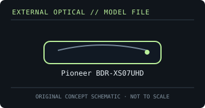

[ OPTICAL DRIVES // IDENTIFIED EXTERNAL MODEL ]
Pioneer BDR-XS07UHD
Slot-loading portable Blu-ray writer with UHD Blu-ray playback support on a properly equipped PC. UHD playback depends on software and host protection/display requirements.

IDENTIFICATION: Confirm the full model/suffix against the label and manufacturer documentation. Read capability is not write capability; speed ratings depend on media and recording mode.
Model-specific specifications
| Catalog subcategory | External Blu-ray drives |
|---|---|
| Exact product identifier | Pioneer BDR-XS07UHD |
| Supported write formats / rates | BD-R up to 6× and BD-RE up to 2×, including supported BDXL layers; DVD±R up to 8×; CD-R up to 24×. UHD Blu-ray is not writable. |
| Supported read formats / rates | Reads BD-ROM, BD-R/RE and supported BDXL; reads DVD-ROM and CD-ROM as well. UHD Blu-ray read/playback is software- and host-dependent, not a guarantee of playback on every computer. |
| USB interface and power | USB 3.2 Gen 1 Type-C external interface, backward-compatible with USB 2.0; powered over USB. Slot-loading slim external mechanism. |
| Host compatibility | Pioneer’s bundled UHD software targets supported Windows PCs. For standard data discs, use an OS and application that support USB optical drives; verify protected-video requirements for Blu-ray/UHD playback. |
| Model distinction | Slot-loading XS07UHD is distinct from the tray-loading BDR-XD07UHD; model and host requirements must be checked against the exact unit. |
Host and media notes
Slot-loading XS07UHD is distinct from the tray-loading BDR-XD07UHD; model and host requirements must be checked against the exact unit.
- Use the drive only with media types explicitly supported by the exact manual. BDXL, standard BD-R/RE and UHD Blu-ray are distinct capabilities.
- Check operating-system and playback/authoring application support independently; a USB connection alone does not provide Blu-ray codec, protected-video or UHD playback capability.
- For preservation work, record drive model/firmware, host interface, software, media type, checksums and read/verification errors with each image.
Model documentation and specification sources
- Pioneer — BDR-XS07UHD support articleManufacturer support/documentation entry for this exact slot-loading model.
- Pioneer BDR-XS07UHD operating instructionsModel-specific operating manual and media/system notes.
Manufacturer and manual speed ratings are maxima under supported media conditions and are not a guarantee of actual sustained read/write performance on an individual disc.